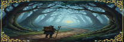

Log real life activities to earn XP across your five stats — Strength, Wisdom, Discipline, Charisma and Creativity. Every activity requires you to answer questions proving you actually did it. Your answers are scored on depth and effort — the more honestly and thoroughly you reflect, the more XP you earn.
Skipped question — 0% XP for that question.
Low effort (under minimum words) — 70% XP.
Minimum met — 100% XP.
Good (1.5× min words) — 115% XP.
Excellent (2× min words) — 130% XP.
Each question carries equal weight. Final XP is the sum across all questions.
Strength — physical activity, exercise, sport and personal bests.
Wisdom — reading, learning, studying, languages and applying knowledge.
Discipline — digital habits, resisting temptation, sleep, deep work and mindfulness.
Charisma — relationships, vulnerability, courage in social situations and connection.
Creativity — creative projects, making things, music, writing and performance.
Your overall character level is the floor average of all five stats. Level up individual stats by logging activities in that domain. Reach Level 50 in your overall level to prestige and start again with a 1.25× XP multiplier.
Every level milestone, streak and special achievement unlocks cosmetic rewards — callsigns, icons and prestige badges. Visit The Vault to equip what you have earned. Tap locked items to see what challenge unlocks them.
One log per activity per day. Your answers must be genuine — this system only works if you are honest with yourself. The XP means nothing if the life behind it is not real. Every point you earn is a record of something you actually did.